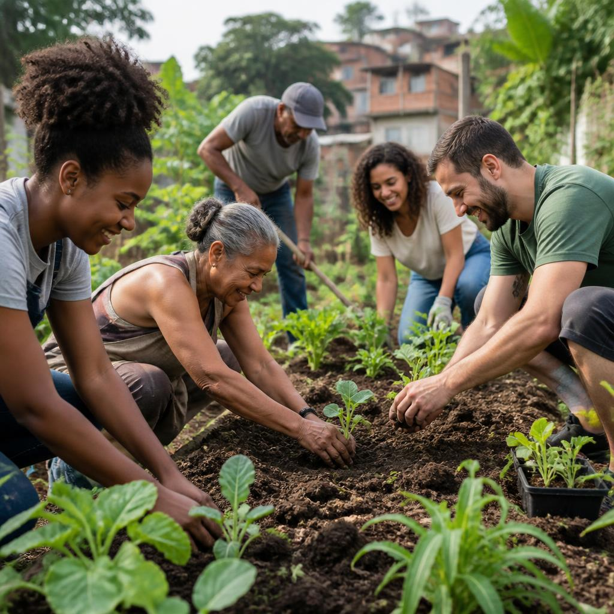

Quem somos
A ONG Sementes do Amanhã é uma organização fictícia sem fins lucrativos, criada para apoiar crianças, jovens e famílias por meio da educação, da convivência e da participação comunitária.
Acreditamos que pequenas ações, realizadas em conjunto, podem abrir caminhos para um futuro com mais possibilidades. Este site apresenta nossas iniciativas como parte de um trabalho acadêmico.

Nosso propósito
Promover iniciativas solidárias que fortaleçam vínculos, valorizem os talentos locais e ampliem o acesso a oportunidades na comunidade.
Entre em contato
ONG Sementes do AmanhãRua das Acácias, 120 — Centro
Campinas — SP
E-mail: contato@sementesdoamanha.org.br
Telefone: (19) 3456-7890